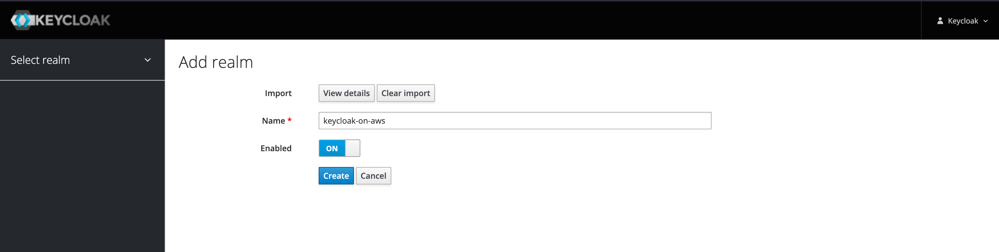

Tutorial: How to integrate Keycloak with Amazon API Gateway?
This tutorial demonstrates how to control permissions for different users to access different API interfaces through Keycloak. For more information, see Authorization Services from the Keycloak document.
Architecture

Prerequisites
-
You have already deployed the keycloak-on-aws via CloudFormation or AWS CDK and already successfully logged in the Keycload dashboard as Keycloak admin user.
-
Make sure your have the following JAVA_OPTS filled in CloudFormation parameter.
-Dkeycloak.profile.feature.scripts=enabled -Dkeycloak.profile.feature.upload_scripts=enabled
Deployment Overview
Use the following steps to deploy this solution on AWS.
Step 1. Git clone keycloak-on-aws
Step 2. Import the Keycloak example config
Step 3. Run serverless-express-auth locally
Step 5. Validate the User Permissions
Step 1. Git clone keycloak-on-aws
Download the keycloak-on-aws code locally.
git clone https://github.com/aws-samples/keycloak-on-aws.git
cd keycloak-on-aws
Step 2. Import the Keycloak example config
-
Login the Keycloak dashboard as keycloak admin user.
-
Hover over the Master in the left navigation pane, and choose Add realm.
-
Choose Select file, and select tutorials/api-gateway/resoures/keycloak.json in your git downloaded code. 
-
Choose Create.
Step 3. Run serverless-express-auth locally
This example is mainly based on expressjs and official keycloak-nodejs-connect. And using serverless-express to make expressjs be able to run on lambda.
The advantage of this way is keycloak-nodejs-connect is maintained by keycloak team and it is the recommended way to connect to keycloak.
Notice: The document of keycloak-nodejs-connect is at https://www.keycloak.org/docs/latest/securing_apps/#_nodejs_adapter
-
Login the Keycloak dashboard as keycloak admin user.
-
In the left navigation pane, and choose Clients.
-
Choose vue to show detailed metadata.
-
Choose Installation.
-
Click Format Option, choose Keycloak OIDC JSON.
-
According to keycloak client installation config to update tutorials/api-gateway/resources/keycloak.json in your git downloaded code.
{ "realm": "keycloak-on-aws", "auth-server-url": "https://keycloak.yourdomain.com/auth/", "ssl-required": "external", "resource": "vue", "public-client": true, "confidential-port": 0, // Don't remove the following line, this is for vue-ui to contact to api gw !!! "x-api-gw-url": "http://localhost:3003/dev/hello" } - Go to tutorials/api-gateway/serverless-express-auth directory, do the following.
Sample Output
cd tutorials/api-gateway/serverless-express-auth yarn yarn offlineyarn run v1.22.19 $ SLS_DEBUG=* serverless offline --host 0.0.0.0 --httpPort 3003 --lambdaPort=3019 ... offline: Offline [http for lambda] listening on http://0.0.0.0:3019 offline: Function names exposed for local invocation by aws-sdk: * authEndpoint: serverless-express-auth-dev-authEndpoint * hello: serverless-express-auth-dev-hello [offline] Lambda Invocation Routes (for AWS SDK or AWS CLI): * POST http://0.0.0.0:3019/2015-03-31/functions/serverless-express-auth-dev-authEndpoint/invocations * POST http://0.0.0.0:3019/2015-03-31/functions/serverless-express-auth-dev-hello/invocations [offline] Lambda Async Invocation Routes (for AWS SDK or AWS CLI): * POST http://0.0.0.0:3019/2014-11-13/functions/serverless-express-auth-dev-authEndpoint/invoke-async/ * POST http://0.0.0.0:3019/2014-11-13/functions/serverless-express-auth-dev-hello/invoke-async/ offline: Configuring Authorization: hello authEndpoint [offline] Creating Authorization scheme for hello-authEndpoint-GET-hello ┌───────────────────────────────────────────────────────────────────────┐ │ │ │ GET | http://0.0.0.0:3003/dev/hello │ │ POST | http://0.0.0.0:3003/2015-03-31/functions/hello/invocations │ │ │ └───────────────────────────────────────────────────────────────────────┘ offline: [HTTP] server ready: http://0.0.0.0:3003 🚀 offline: offline: Enter "rp" to replay the last request
Step 4. Run Vue UI locally
cd tutorials/api-gateway/vue-ui
yarn
yarn serve
yarn run v1.22.19
$ vue-cli-service serve
Browserslist: caniuse-lite is outdated. Please run:
npx browserslist@latest --update-db
Why you should do it regularly: https://github.com/browserslist/browserslist#browsers-data-updating
INFO Starting development server...
Starting type checking service...
Using 1 worker with 2048MB memory limit
98% after emitting CopyPlugin
DONE Compiled successfully in 1638ms 3:42:04 PM
No type errors found
Version: typescript 4.2.4
Time: 1111ms
App running at:
- Local: http://localhost:8080/
- Network: http://localhost:8080/
Note that the development build is not optimized.
To create a production build, run yarn build.
Step 5. Validate the User Permissions
A common scenario is, different users have different permissions to perform an action (allow/deny). We have built in two different users, user1 is allowed to call API GW while user2 is not.
Users:
| user | password | realm role | desription |
|---|---|---|---|
| user1 | user1 | call-api | user1 is permited to call api gateway |
| user2 | user2 | - | user2 is not permited to call api gateway |
-
Log in to the Vue UI console, such as http://localhost:8080/.
-
Choose Login.
-
Enter user1 to Username or email, enter user1 to Password.
-
Choose Sign In.
-
Choose Request, you will get the following response message, the response will be successfully.
{ "url": "http://localhost:3003/dev/hello", "status": 200, "statusText": "OK", "data": { "message": "Hello World from protect server" } } -
Choose Logout.
-
Enter user2 to Username or email, enter user2 to Password.
-
Choose Sign In.
-
Choose Request, you will get the following response message, the response will fail.
{ "url": "http://localhost:3003/dev/hello", "status": 401, "statusText": "Unauthorized", "data": { "statusCode": 401, "error": "Unauthorized", "message": "Unauthorized" } }
FAQ
1. How to export Keycloak realm users?
Run the following command to export Keycloak realm users:
$ docker exec <container id>
$ /opt/jboss/keycloak/bin/standalone.sh -Dkeycloak.migration.action=export -Dkeycloak.migration.realmName=keycloak-on-aws -Dkeycloak.migration.provider=singleFile -Dkeycloak.migration.provider=singleFile -Dkeycloak.migration.file=realm-export.json -Djboss.socket.binding.port-offset=99
For more information, refer to https://stackoverflow.com/questions/60766292/how-to-get-keycloak-to-export-realm-users-and-then-exit.